Contenido
Del ejemplo resuelto a tus tres retos
Antes de cada reto hay una práctica breve sin nota. En el primero tendrás pasos; en el segundo, un plan y puntos de control; en el tercero, tendrás que elegir las operaciones. Comprueba cotas y geometría antes de exportar. No cambies las dimensiones obligatorias para hacerlas coincidir con una recomendación genérica de impresión.
Micropráctica: colocar agujeros por su centro
En una placa 20 × 20, coloca un agujero Ø4 cuyo centro esté a 5 mm de cada borde de una esquina. El cilindro mide 4 de ancho: su borde cercano debe quedar a 5−2=3 mm. Usa vista superior y la Regla para comprobar qué referencia estás midiendo (borde o centro).
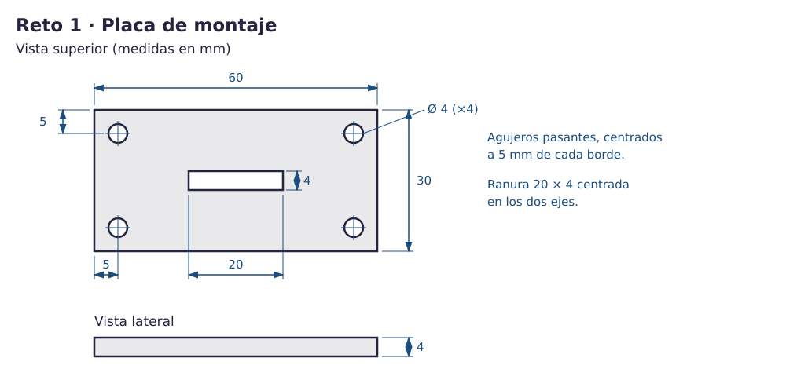
Reto 1 · Placa de montaje
Una pieza puede tener varios cortes independientes. Duplicar un hueco conserva sus medidas, pero hay que colocar cada copia.
- Vuelve al plano horizontal (W y clic en una zona vacía, después Esc). Construye una base de 60 × 30 × 4 en Z=0.
- Crea cuatro cilindros huecos Ø4, de Z=−1 a Z=5. Sitúa sus centros en las coordenadas del ejemplo; revisa las cuatro esquinas.
- Crea una caja hueca de 20 × 4 × 6. Selecciona placa y ranura, abre Alinear (L), haz clic en la placa para fijarla como referencia y pulsa sólo los centros X/Y. Vuelve a seleccionar la ranura y deja su base en Z=−1.
- Agrupa y comprueba las vistas superior, inferior y lateral. Exporta reto1.stl y conserva el enlace editable.
Resultado esperado: Placa 60 × 30 × 4 con cuatro Ø4 y ranura central 20 × 4 pasantes.
Comprueba: Quedan 3 mm entre cada agujero y sus bordes cercanos. La ranura empieza a 20 mm del borde X y a 13 mm del borde Y.
Error frecuente: Colocar el borde del cilindro a 5 mm desplaza su centro a 7 mm: no cumple el plano.
Piensa y comprueba. Una placa ocupa Z=0–4. ¿Cuál atraviesa: hueco 0–4, 1–5 o −1–5?
Ver explicación
Atraviesan 0–4 y −1–5. El de 1–5 deja 1 mm de fondo. La recomendación de dar margen no invalida el corte exacto.
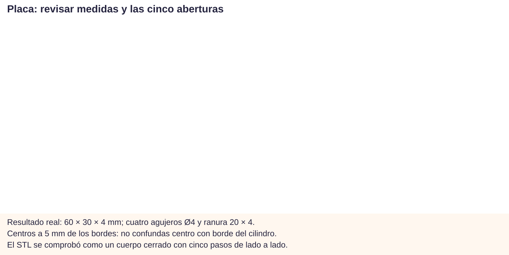
Micropráctica: conservar un fondo
Construye un recipiente de 20 × 20 × 15: resta un hueco de 16 × 16 × 15, centrado en X/Y y elevado 2 mm. Predice las paredes: (20−16)/2=2 mm; el fondo también mide 2. Deshaz, baja el hueco a 0 y observa por qué ahora es un tubo.
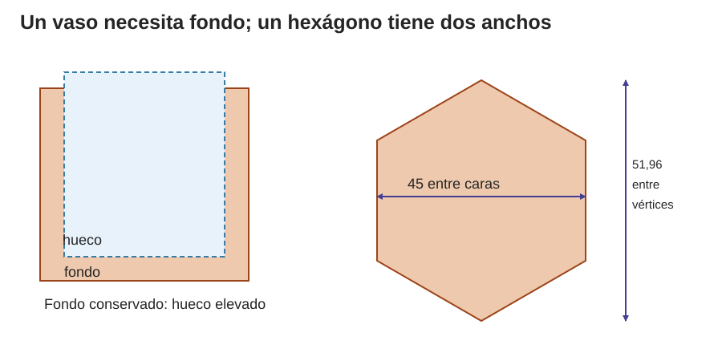
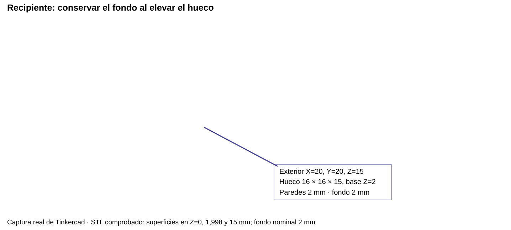
Reto 2 · Portalápices hexagonal
El hexágono regular tiene seis lados iguales. La medida entre dos caras opuestas es menor que la distancia entre dos vértices opuestos. Gíralo hasta que dos caras opuestas queden paralelas al eje Y: la anchura X mide entonces la distancia entre caras.
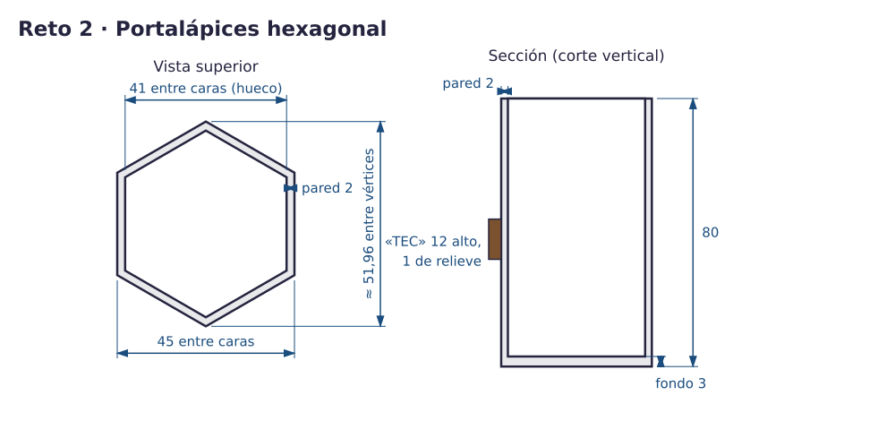
Construir el cuerpo y el relieve
Restar dos hexágonos semejantes y concéntricos produce paredes uniformes; escalar sólo un eje deforma el hexágono.
- Usa Polígono de seis lados. Orienta las caras como muestra el plano. Conserva la proporción regular XY y fija 45 mm entre caras; da altura 80.
- Duplica el hexágono. En esta orientación, escribe por separado X=41, Y=47,34 y Z=80 mm en sus campos de tamaño: reduces X/Y en la proporción 41/45 sin reducir la altura. Relee los tres valores. Ponlo Hueco y eleva su base a Z=3.
- Alinea ambos por sus centros X/Y, conservando Z. Agrupa. Comprueba el fondo por debajo.
- Pulsa W (Plano de trabajo) y selecciona la cara elegida para el texto: aparece una cuadrícula amarilla sobre ella. Las cotas pasan a referirse a ese plano local. Añade TEC, legible desde fuera: altura del carácter 12 mm, anchura menor que el lado de unos 26 mm y relieve exterior 1 mm. Ajusta el tamaño del carácter si no cabe; comprueba el contacto con la cara. Para volver al plano horizontal, pulsa W y haz clic en una zona vacía del plano original; después pulsa Esc. Comprueba de nuevo las cotas globales.
- Mira desde arriba, abajo y el lateral del texto; exporta reto2.stl.
Resultado esperado: Vaso de 80 mm, fondo 3 y paredes 2; letras conectadas y legibles.
Comprueba: La anchura entre caras es 45; no confundas la caja envolvente girada con esa distancia. El texto no aumenta la altura del vaso.
Error frecuente: Alinear Z después de elevar el hueco elimina el fondo previsto. Cambiar sólo X de un hexágono produce paredes no uniformes.
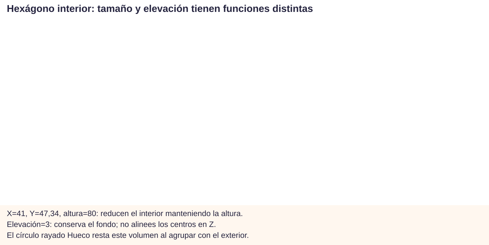
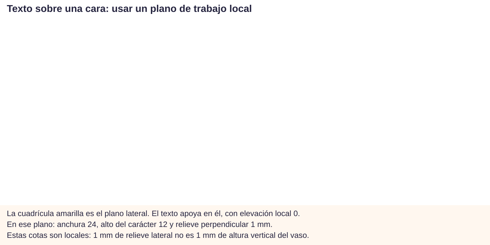
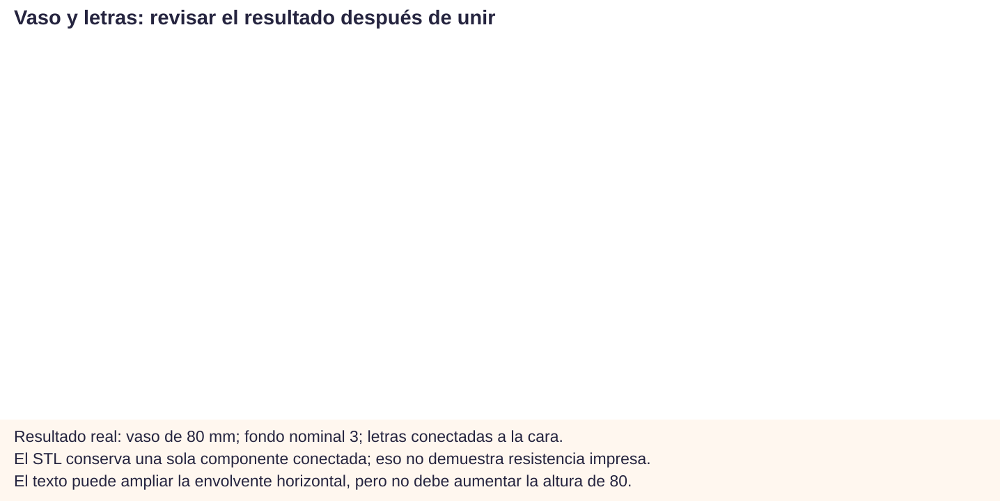
Micropráctica: medir la holgura
Dibuja un hueco de 20 mm y una pestaña centrada de 19,4. Sobran 0,6 mm en total: 0,3 a cada lado. Si desplazas la pestaña hasta tocar una pared, todo el espacio queda en el lado opuesto.
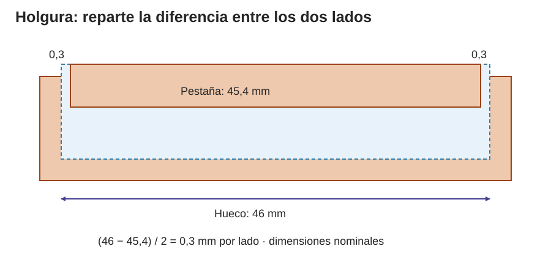
Pruébalo. Cambia el hueco y la pestaña, y mueve la pestaña dentro del hueco: la holgura total no cambia, pero sí cómo se reparte entre los dos lados.
Reto 3 · Caja y tapa
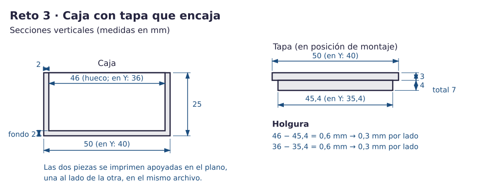
| Elemento | Dimensiones nominales |
|---|---|
| Caja | Exterior 50 × 40 × 25; hueco 46 × 36 × 25 con base en Z=2. Pared y fondo 2. |
| Placa de tapa | 50 × 40 × 3, apoyada en Z=0 y separada de la caja. |
| Pestaña | 45,4 × 35,4 × 4, centrada en X/Y sobre la placa; base Z=3. Altura total 7. |
Tu plan: explica qué formas restarás para crear la caja; qué centros alinearás; cómo conservarás el fondo; y cómo dejarás la pestaña conectada. Construye, mide y revisa. La tapa y la caja se colocan separadas unos 10 mm, no encajadas, para fabricar dos cuerpos.
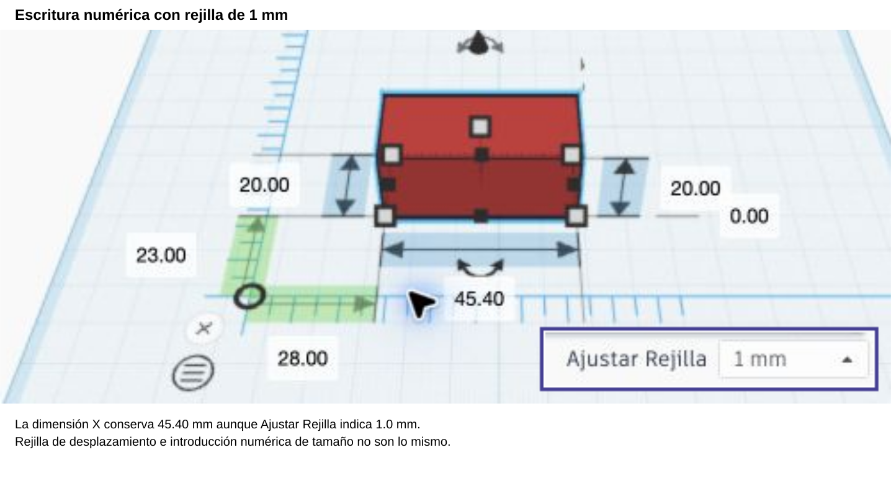
En la prueba reproducida, Tinkercad conserva una dimensión escrita de 45,4 mm con rejilla de 1 mm. Por tanto, no es correcto afirmar que esa rejilla obliga a redondear el tamaño escrito.
Medidas decimales: distingue ajuste del desplazamiento e introducción numérica. Escribe 45,4 (o 45.4 según el campo), confirma y relee la dimensión. Si no se conserva, comprueba el separador, el campo, la confirmación y la escala; no atribuyas automáticamente el fallo a la cuadrícula. Ajustar a 0,1 ayuda a colocar arrastrando, pero no demuestra que el campo de tamaño redondee.
Resultado y comprobación: hueco 46 × 36, pestaña 45,4 × 35,4; (46−45,4)/2=(36−35,4)/2=0,3 por lado. Base inferior cerrada; pestaña unida a placa; dos piezas independientes. Un ajuste real depende de máquina, material, orientación y acabado: compruébalo con una probeta antes de fabricar un encaje importante.
Error frecuente: escalar el conjunto ya terminado cambia paredes, fondo y holgura a la vez. Corrige la forma concreta y vuelve a medir.
Piensa y comprueba. La tapa se ve como un grupo. ¿Eso prueba que la pestaña está unida?
Ver explicación
No. Comprueba que su base esté en Z=3 y toque la placa, que no haya aire en la vista lateral y que las capas continúen en la unión.
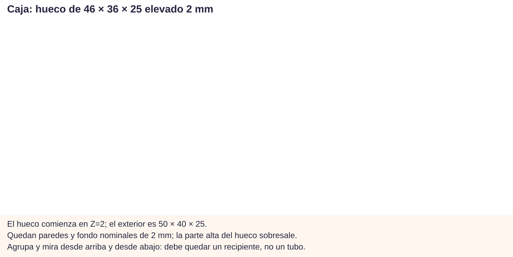
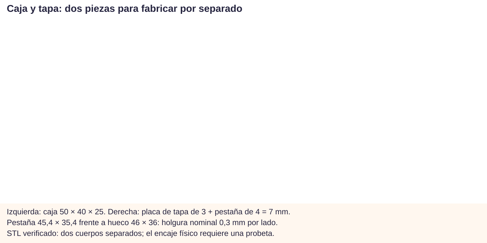
Exportar y entregar
Exporta cada diseño como STL: reto1.stl, reto2.stl y reto3.stl (este último con caja y tapa). Reimpórtalos en un visor o laminador y comprueba dimensiones y cuerpos: STL no incorpora una unidad universal, el receptor debe interpretarlo en milímetros. Entrega los tres archivos y enlaces en «Retos CAD 3D» de Moodle y guarda versiones en la carpeta educativa compartida. Cada persona construye sus modelos; practicar con ayuda antes del reto no sustituye ese trabajo propio.
Verdadero o falso
Antes de exportar tus retos, decide si cada afirmación es verdadera o falsa.
00:00: